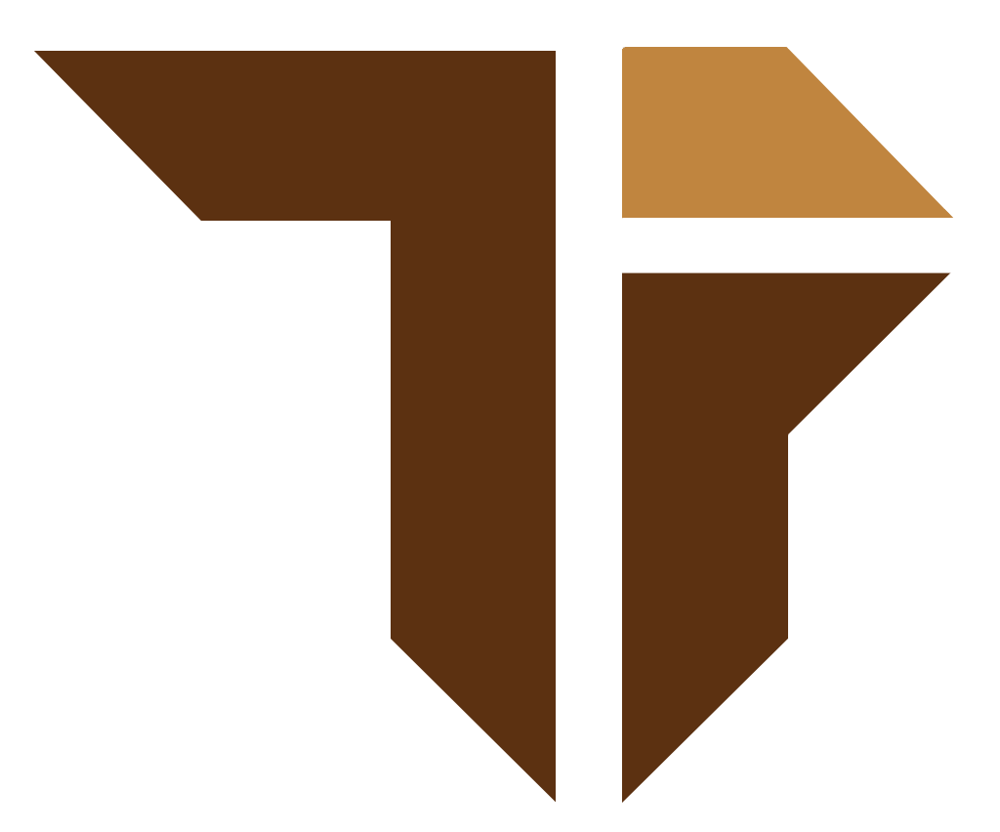

© Information Technology Creative Competition 2017
Technology Artisan
Information Technology Creative Competition adalah kompetisi bidang Teknologi Informasi yang diselenggarakan oleh Himpunan Mahasiswa Teknologi Informasi, Universitas Udayana (HMTI Unud). ITCC memiliki tujuan untuk menjaring kompetensi serta menumbuhkan inovasi dan kreativitas anak bangsa khususnya dalam bidang Teknologi Informasi.
Ayo persiapkan dirimu untuk ITCC 2017 !
- Best Regard, Panitia ITCC
© Information Technology Creative Competition 2017
Technology Artisan